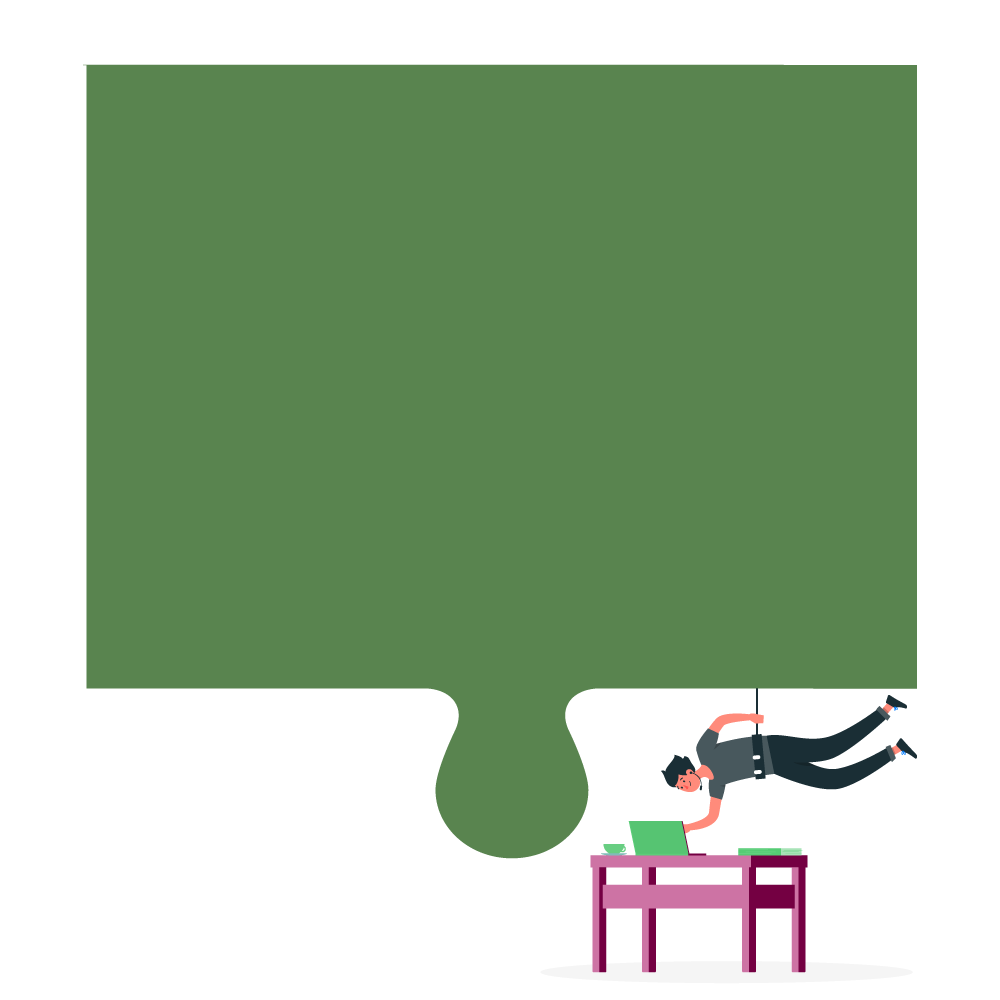
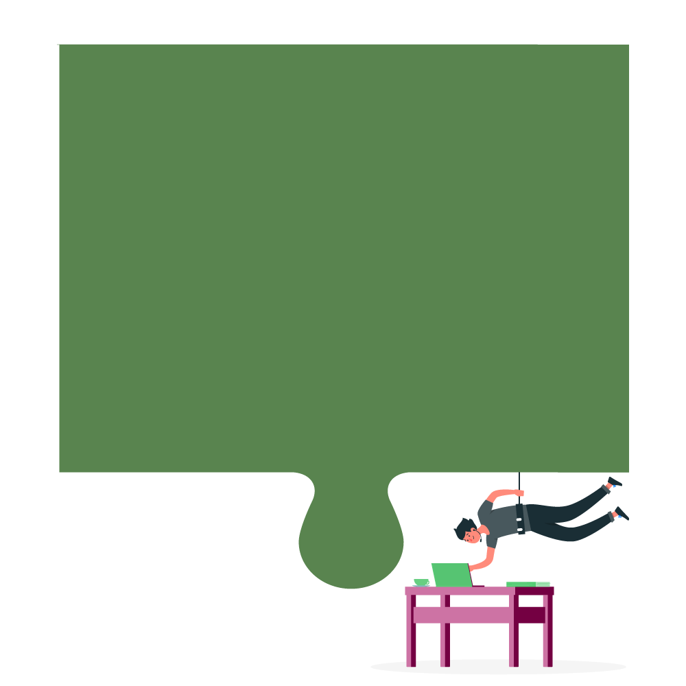

propósito
 

Preparar estudantes de Ciência da Computação para o mercado de trabalho e, assim, desafiar o status quo e solucionar as necessidades de nossos clientes por meio de inovações tecnológicas.
objetivo


Produzir soluções tecnológicas inovadoras e de qualidade, além de se tornar referência no Movimento Empresa Júnior.
motivação